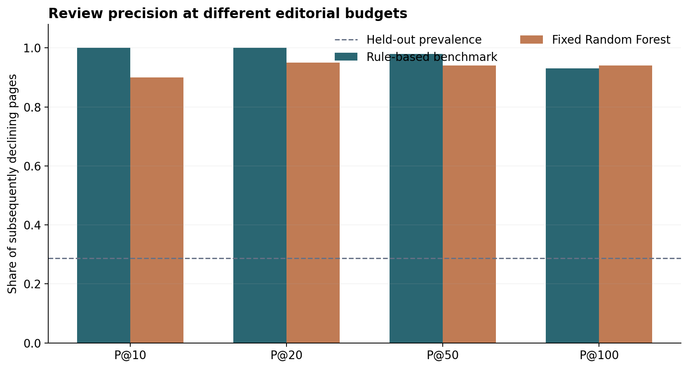
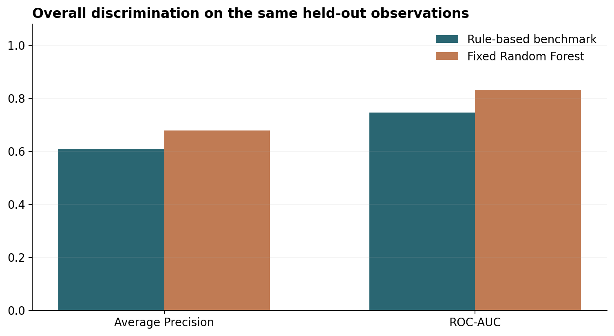
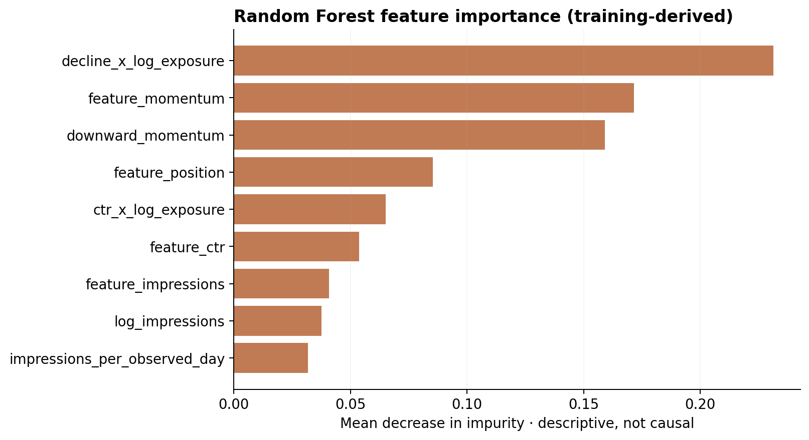
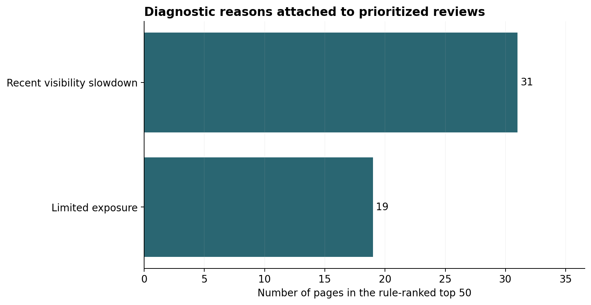

Prioritizing evidence, not promising traffic
This study asks whether search-performance signals can prioritize content pages for investigation before substantial visibility decline. We constructed a page-level dataset from consecutive monthly partitions of the FlyRank internship warehouse and defined a decline using the following month’s impressions per calendar day. A fixed Random Forest and a transparent rule-based score were evaluated on the same previously examined, client-group-held-out observations. The Random Forest achieved 94% Precision@50 and 0.678 Average Precision, compared with 98% and 0.609 for the benchmark. The transparent benchmark was more precise among the top 50 recommendations, demonstrating that editorial review budgets and broader ranking quality can favor different methods.
The editorial prioritization problem
Editorial teams cannot review every page at once. This study examines whether search-performance signals available at a decision date can prioritize which pages warrant diagnostic review for a substantial subsequent decline in search impressions.
The contribution is a reproducible, leakage-aware review-ranking workflow: a prespecified label, a transparent benchmark, one fixed machine-learning approach, group-level evaluation, and a reason-coded editorial action playbook.
A restricted research warehouse, presented responsibly
Source: FlyRank internship warehouse (FlyRank internship warehouse v20260703). Analyzed table: fact_content_daily_performance; each SQL aggregation groups a pseudonymized client–content pair. The remaining dimension and query-level tables were not required for this scoped study.
Dates: 2026-04-01 to 2026-05-01 (exclusive) for features; 2026-05-01 to 2026-06-01 (exclusive) for outcomes. Eligibility: >= 100 feature-month impressions and >= 5 GSC-observed days in each month. Pairs with inadequate outcome-month coverage are excluded, not interpreted as having zero impressions; this avoids invented declines but may cause selection bias.
Study population: 107,144 eligible observations across 47 client groups; 103,980 training and 3,164 held-out observations (10 previously unseen clients).
No client names, domains, URLs, keywords, private queries, access tokens, or raw/page-level data exports are embedded in this site.
One fixed model and one transparent benchmark
Outcome and feature definition
Decline is an impressions-per-calendar-day reduction greater than 30% between the feature month and the next month. Exposure below 100 prior-month impressions and sparse GSC observation are excluded.
Only feature-month exposure, clicks, CTR, weighted position, observation coverage, within-month momentum and their deterministic transformations enter the model.
Split and leakage audit
A fixed GroupShuffleSplit holds out 20% of client groups by count; row fractions differ because client histories are unequal. The model is fitted on training clients only. The same held-out pages and labels evaluate the model and benchmark.
Month-of-outcome metrics, hashed identifiers, target-period observation counts and label-derived flags are excluded from model predictors.
Prespecified benchmark: 40% relative impression exposure + 35% within-feature-month deceleration + 25% below-position-peer CTR. The reference distribution is derived from the training clients only.
Fixed ML model: Random Forest (140 trees, maximum depth 10, minimum leaf size 35, square-root feature subsampling, random seed 42). Median imputation and categorical encoding are fitted inside the training pipeline. Features include log-exposure, per-observed-day impressions, downward momentum, and exposure interactions.
Validation: training-only client-group checks, one predeclared client-held-out comparison, descriptive paired client-cluster bootstrap intervals, and—when data coverage permits—a later-outcome robustness check on the same held-out clients.
Model and benchmark on identical pages


| Metric | Rule benchmark | Random Forest |
|---|---|---|
| Precision@10 | 1.000 | 0.900 |
| Precision@20 | 1.000 | 0.950 |
| Precision@50 | 0.980 | 0.940 |
| Precision@100 | 0.930 | 0.940 |
| Average Precision | 0.609 | 0.678 |
| ROC-AUC | 0.745 | 0.831 |
Precision@K measures the share of observed subsequent declines in the first K reviewed pages. Average Precision summarizes precision–recall ranking; ROC-AUC summarizes pairwise discrimination. All refer to the same primary held-out sample.
Observed held-out outcome base rate: 28.70%; majority class: 71.30%. At a 50-page editorial budget, lift relative to this prevalence is 3.41× for the rule and 3.28× for Random Forest. The rule ranks 49 observed declines and 1 non-declining pages among its top 50; Random Forest ranks 47 and 3, respectively.
Uncertainty: Random Forest minus benchmark
| Metric | Observed difference | Descriptive 95% cluster-bootstrap interval |
|---|---|---|
| Precision@50 | -0.040 | [-0.100, +0.060] |
| Average Precision | +0.069 | [-0.011, +0.121] |
| ROC-AUC | +0.086 | [+0.009, +0.111] |
Bootstrap samples resample complete held-out client groups, not individual rows; only a limited number of groups are available. The intervals should not be overinterpreted as definitive significance tests.
Later-window robustness (secondary): With May features and June outcomes, the unchanged model was evaluated on 6,637 observations across 9 originally held-out clients. Precision@50 was 0.960 for the rule and 0.860 for Random Forest; Average Precision was 0.602 and 0.633, respectively. The evaluation reuses client groups and overlapping calendar-month information, so it is a sensitivity check rather than a prospective independent trial.
Interpretation
A stronger overall ranking statistic does not guarantee a better top-50 review queue. The two methods are compared openly, including instances where the rule benchmark is preferable under a limited editorial budget.
Predictor contributions

What these findings can—and cannot—support
This is an observational decision-support study using monthly aggregated search performance. The label captures later impressions decline, not whether a content refresh would improve results. The study does not reverse-engineer Google’s ranking system or establish that edits cause gains.
Search demand, seasonality, client-level reporting gaps, shifting query mix, measurement quality and the selection of pages with sufficient data can affect the results. The decline target is based on prior impressions in its denominator, making exposure a potentially mechanically related predictor. Model scores are not calibrated probabilities. A limited number of test client groups means uncertainty intervals may be unstable.
Evaluation-history disclosure: The April–May held-out cohort was inspected during earlier method development. It is not presented as a newly untouched confirmatory test. Model settings are fixed for this final presentation, and the benchmark is measured on exactly the same held-out cohort.
The later-window check, when available, reuses held-out groups and some calendar-month information; it is descriptive robustness evidence rather than a fully independent prospective validation.
From ranking scores to concrete review actions
The operational queue uses a transparent score to order pages for human review; the Random Forest provides an additional risk assessment and evaluation comparison. For publication, only grouped priority bands and reason-code frequencies are shown. The page-level queue remains inside the authorized Colab session.
| Priority ranks | Pages | With visibility slowdown | Limited evidence |
|---|---|---|---|
| 1–10 | 10 | 10 | 0 |
| 11–25 | 15 | 7 | 8 |
| 26–50 | 25 | 14 | 11 |
The initial review queue is ranked using the prespecified transparent score. Random Forest is reported as a complementary learned risk-ranking method. No client, page or query identifiers are published.
| Review evidence | Top-50 pages | Recommended diagnostic action |
|---|---|---|
| Visibility slowdown | 31 | Examine demand, indexing and topic currency before editing |
| Limited exposure | 19 | Monitor rather than initiate an expensive rewrite |

A public method with protected observations
The full analysis is in the self-contained capstone notebook, run in Google Colab. It authenticates with a read-only HF_TOKEN from Colab Secrets, aggregates month-partitioned Parquet via DuckDB, and performs all modeling inside the notebook.
Downloadable public outputs are limited to this paper, aggregate charts and the aggregate metrics JSON, and the eight-section assessment report. The public GitHub repository contains the notebook and previous weekly work without publishing raw data. Access to the gated dataset must be independently authorized.
Reproduction requires the FlyRank research data-use permissions, which prohibit reidentification and redistributing raw records.
Research provenance
Built on the FlyRank ML Internship dataset. FlyRank AI provided the training context and pseudonymized research warehouse. The interpretation and methodological limitations are the author’s responsibility. Data-use and research-publication restrictions remain in effect.